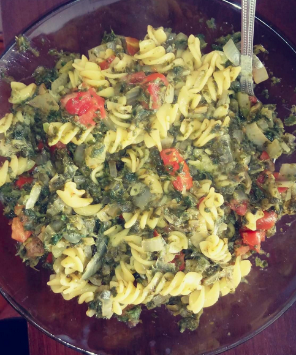

Noodles with spinach

Description
Vegan and glutenfree noodles with spinach and tomato
serving for two
Ingredients
- 250g Corn noodles
- 15g olive oil
- 2 big onions
- 4 big garlic cloves
- 1 big tomato
- 500g frozen shredded spinach
- salt
- spices like pepper,thyme, marjoram, oregano
Steps
- boil water in a pot
- salt water to get flavor
- when the water starts to boil, put the noodles in it, about 1-12 minutes
- in the meantime warm up olive oil on pan
- dice the onions, tomato and cut the garlic into slices
- put onions onto the pan and fry over medium heat until vitrify
- add spinach to onion and fry it until onion will be goldren brown and spinach hot
- add garlic and tomato and season spinach with spices at your discretion
- after 2-3 minutes turn off the gas and drain the noodles
- put everything on a plate and mix
- serve hot